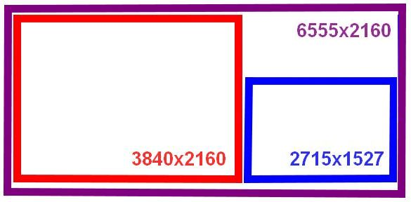

Screen Export
DCS offers exporting and arranging in-game screens on multi-monitor setups. For example displaying the content of the DSCG screen on a second monitor.
(Setup with RWR exported to a small monitor)
This allows for making great setups, in particular when owning some smaller extra monitors; and is especially useful for SimPit builders.

DCS interface for this expects users to define what is called a Viewport. The F-4E currently supports this feature for the following screens:
| Screen | Viewport Name |
|---|---|
| DSCG (Pilot) | F4E_Dscg_Pilot |
| DSCG (WSO) | F4E_Dscg_Wso |
| HUD | F4E_HeadUpDisplay |
| RWR | F4E_Rwr |
💡 The DSCG screen of the cockpit the player is currently not sitting in will not render any content.
In order to work, the DSCG screens currently require also exporting the viewport
F4E_Dscg_Tv, a width and height of1pixel suffices though.
🚧 Support for other screens is in development:
F4E_Cameras_AvtrTimeIndicatorPilotF4E_Cameras_AvtrTimeIndicatorWsoF4E_EoTgtDesignatorSystem_BitDisplayF4E_EoTgtDesignatorSystem_RangeIndicatorF4E_UhfRadio_FrequencyChannelIndicator
Of special interest are also programs such as Helios which simplify the entire process and lets users create even complex setups with ease.
Viewport
In order to make use of the feature, players can define a special file in their
Saved Games MonitorSetup folder for DCS, for example:
C:\Users\John Doe\Saved Games\DCS\Config\MonitorSetup\
Such a file would for example be called MySetup.lua and look similar to this:
_ = function(p)
return p
end
name = _("MySetup")
Description = "This is my setup"
Viewports = {
Center = {
x = 0,
y = 0,
width = 3840,
height = 2160,
viewDx = 0,
viewDy = 0,
aspect = 3840 / 2160
}
}
GU_MAIN_VIEWPORT = {
x = 0,
y = 0,
width = 3840,
height = 2160
}
UIMainView = {
x = 0,
y = 0,
width = 3840,
height = 2160
}
function reconfigure_for_unit(unit_type)
if unit_type == "F-14B" or unit_type == "F-14A-135-GR" or unit_type == "F-14A-135-GR-Early" then
F14_VDI = {
x = 1016,
y = 1450,
width = 525,
height = 525
}
F14_HSD = {
x = 1016,
y = 1985,
width = 525,
height = 525
}
elseif unit_type == "M-2000C" then
RIGHT_MFCD = {
x = 879,
y = 1580,
width = 800,
height = 800
}
elseif unit_type == "F-4E-45MC" then
F4E_Dscg_Pilot = {
x = 3840,
y = 2160 - 1527,
width = 300,
height = 300
}
F4E_Dscg_Wso = {
x = 3840 + 300,
y = 2160 - 1527,
width = 300,
height = 300
}
F4E_HeadUpDisplay = {
x = 3840 + 300 + 300,
y = 2160 - 1527,
width = 300,
height = 300
}
F4E_Rwr = {
x = 3840 + 300 + 300 + 300,
y = 2160 - 1527,
width = 300,
height = 300
}
F4E_Dscg_Tv = {
x = 3840,
y = 2160 - 1527 + 300,
width = 1,
height = 1
}
else
LEFT_MFCD = {
x = 3840,
y = 2160 - 1527,
width = 700,
height = 700
}
RIGHT_MFCD = {
x = 3840 + 700,
y = 2160 - 1527,
width = 700,
height = 700
}
end
end
Once created, this setup will now appear within DCS for selection in the graphics settings:

The way the setup works is that you first sum up the resolution of all monitors
that you want to use combined. This will be the target resolution to render DCS
at. The example uses two monitors, one at a 3840x2160 resolution and the other
at 2715x1527, combined that makes a virtual monitor resolution of 6555x2160.

The exact arrangement is defined in the Windows Display Settings:
In the setup-file, one has to now define several viewports for DCS. This tells the game where on the virtual monitor to render which scene. The format looks as follows:
NAME_OF_THE_VIEWPORT = {
x = ..., -- x-coordinate of top left corner, in pixels
y = ..., -- y-coordinate of top left corner, in pixels
width = ..., -- width to use for the scene, in pixels
height = ... -- height to use for the scene, in pixels
}
The main scenery of DCS is defined and placed on the virtual monitor through the following viewports:
Viewports = {
Center = {
x = 0,
y = 0,
width = 3840,
height = 2160,
viewDx = 0,
viewDy = 0,
aspect = 3840 / 2160
}
}
GU_MAIN_VIEWPORT = {
x = 0,
y = 0,
width = 3840,
height = 2160
}
UIMainView = {
x = 0,
y = 0,
width = 3840,
height = 2160
}
In the example setup this will render the main scenery of the game on the
3840x2160 monitor arranged on the left.
The following section in the file lets you define custom viewports per aircraft type:
function reconfigure_for_unit(unit_type)
if unit_type == "F-14B" or unit_type == "F-14A-135-GR" or unit_type == "F-14A-135-GR-Early" then
...
elseif unit_type == "M-2000C" then
...
elseif unit_type == "F-4E-45MC" then
...
else
... -- any other aircraft
end
end
Within this construct one can now declare custom viewports, for example
F4E_Dscg_Pilot = {
x = 3840,
y = 2160 - 1527,
width = 300,
height = 300
}
will place the DSCG screen on the second monitor as follows:

Modding
Viewports, once defined by users in their monitor setups, are then picked up by the modules code in the respective Indicator-lua-files, which can be found for example in:
C:\Programs\DCS\Mods\aircraft\F-4E\Cockpit\Scripts
As an example, the HUD declares at the end of
Scripts\HeadUpDisplay\Indicator\init.lua the following two lines
dofile(LockOn_Options.common_script_path .. "ViewportHandling.lua")
try_find_assigned_viewport("F4E_HeadUpDisplay")
which will try to see if the user created a viewport called F4E_HeadUpDisplay
and if so, render the scene there.
Modders can follow this approach to easily create new viewports in modules that do not officially support them yet.